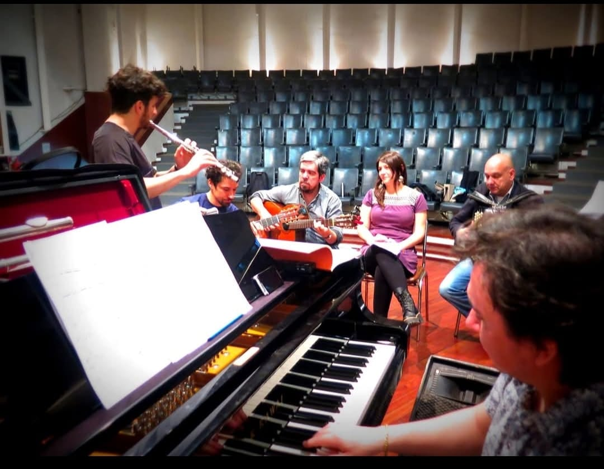
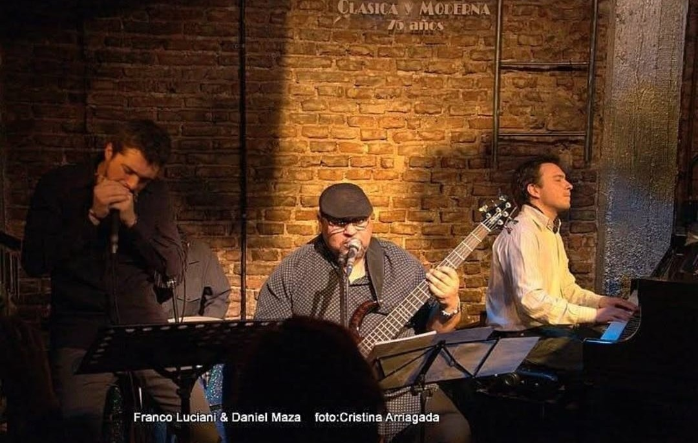
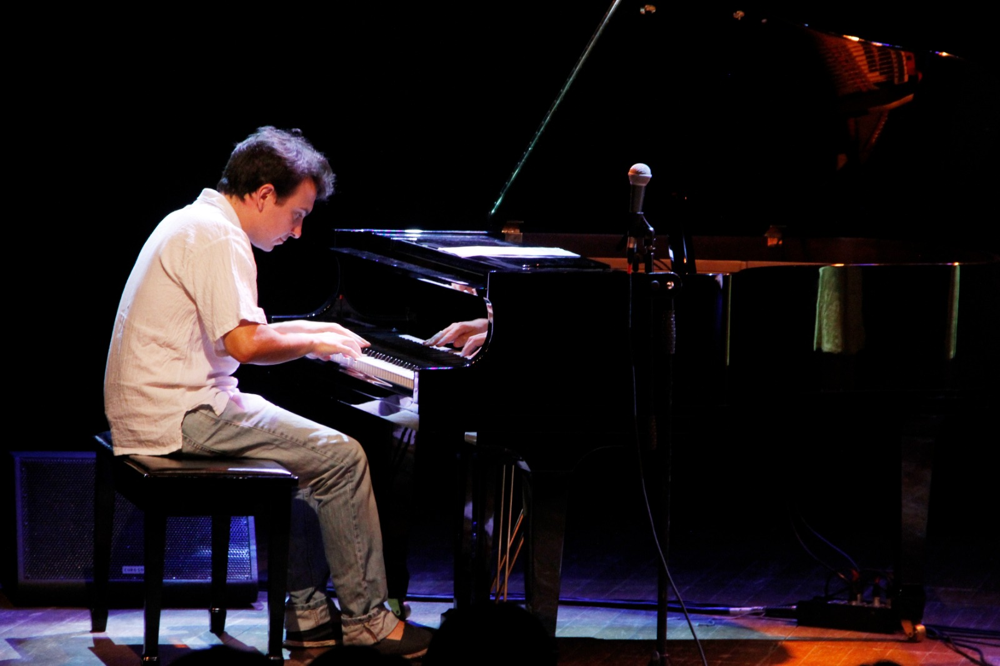

"Explorar todo lo posible, desarrollar el fraseo, la armonía y la melodía sin perder la esencia."
Perfil Profesional
Pianista, arreglador y compositor argentino con trayectoria nacional e internacional, formación académica sólida y experiencia en festivales, giras y producciones discográficas.
Formación
Diplomatura en Música Argentina
Universidad Nacional de San Martín (UNSAM)
Berklee College of Music
Boston, Estados Unidos
Conservatorio Fracassi
Formación académica inicial
Hitos & Escenarios

Escenarios del Mundo
Pianista titular para cadenas internacionales como Princess y Royal Caribbean. En 2024 recorrió Japón y se prepara para el World Cruise 2025.
Templos de la Música
Desde el Luna Park hasta el Estadio Monumental, ha formado parte de las producciones más masivas de Argentina.


Liderazgo Musical
Director Musical de los homenajes a Malvinas en Tecnópolis y a Violeta Parra en el CCK.